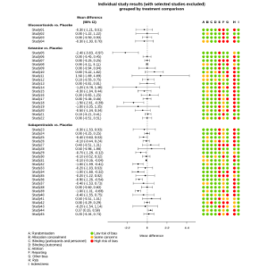
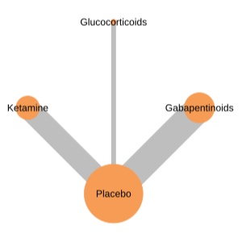
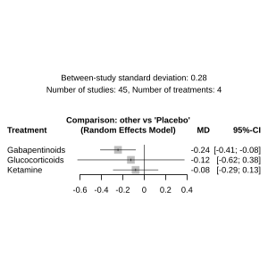
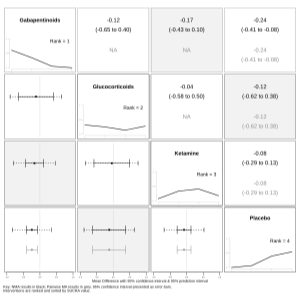
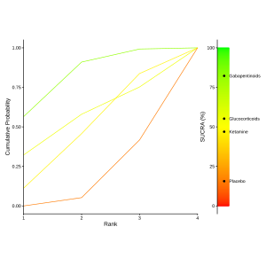
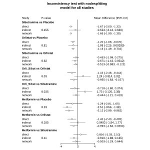
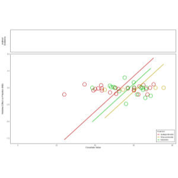
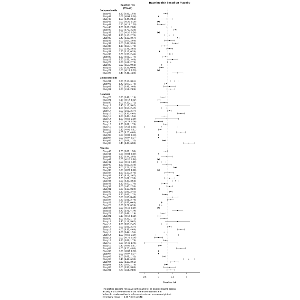

library(metainsight)
run_metainsight()An introduction to MetaInsight
The metainsight package contains functions to conduct network meta-analyses (NMA). NMA can compare treatments between studies even when no direct comparisons have been made and help determine the ‘best’ intervention for patients. Options are provided for conducting frequentist NMA, Bayesian NMA and Bayesian meta-regression including baseline risk can all be conducted using a single data format and consistent terminology. MetaInsight is primarily designed to be used through the Shiny app, but the functions can also be used outside of the app and provide a consistent and simple-to-use interface to the underlying analytical packages (bnma, gemtc and netmeta, with additional functionality from meta and metafor).
Installation
Install metainsight using:
install.packages('metainsight')or from GitHub using:
devtools::install_github("CRSU-Apps/metainsight")Running the app
To run the app use:
If you have a saved file from the app, you can restore the app state using:
run_metainsight(load_file = "<path to file>")Plots
Most plots are produced as scalable vector graphics (svg) which has the advantage of being consistent when they are saved to different formats and avoids you having to manually adjust plot dimensions depending on your dataset. When plotting functions are called in an rmarkdown or quarto chunk, the plots will display as images, but if called from the console they will produce code. To show them as images via the console, pipe them to htmltools::browsable and they will be visible in the Viewer panel of RStudio. To save plots to file, use the write_plot function which supports exporting as png, pdf or svg. For example:
summary_study(configured_data) |> write_plot("summary_study_plot.pdf")In this vignette, to keep the file size small, a different function called show_plot is used to display plots, which is not part of the package.
Plots produced by *_deviance and *_mcmc functions are not produced in this way, partly because they are not intended for publication and also because the deviance plots are interactive inside the app.
Conducting an analysis
Functions are categorised depending on the stage in the analysis and type of analysis being conducted and match the tabs at the top of the app. For all analyses, the data must be loaded and configured prior to producing outputs.
Setup
Two example datasets are built into the package for either a binary or continuous outcome. We will use the built in continuous dataset for these examples which are loaded when data_path is not provided to the setup_load function. Data can be provided either in a long format, where each row is a study arm or a wide format, where each row is a study. Studies must contain a minimum of two arms and share a treatment with another study.
For continuous outcomes, long data should contain the columns:
-
Study- an identifier, e.g. author and year -
T- name of treatment -
N- number of participants -
Mean- mean value of the outcome -
SD- standard deviation of the outcome.
Wide data for continuous outcomes should contain at least the following columns where the number refers to the arm of the study and extra columns should be added depending on the number of arms. For studies with fewer arms, the later-numbered columns should be left blank or set as NA.
StudyN.1N.2Mean.1Mean.2SD.1SD.2
For binary outcomes, long data should contain the columns:
StudyT-
N(as for continuous data) -
R- the number of participants with the outcome of interest.
Wide data for binary outcomes follows the same convention and should contain at least the following columns:
StudyT.1T.2R.1R.2N.1N.2
Additionally, a covar.<name> column can be added to all formats containing covariate data where <name> should be replaced with the name of the covariate. For long data, covariate values must be equal for every study arm within a study. Risk of bias data can also be included with all columns containing values ranging from 1 (low risk) to 3 (high risk): rob for the overall risk of bias, indirectness for indirectness and rob.<name> for up to ten individual components.
setup_load checks that the data is valid and reports any errors that make it unsuitable to analyse.
The function returns a list of objects, with the uploaded data in the data object.
library(metainsight)
loaded_data <- setup_load(outcome = "continuous")
loaded_data$data[1:6, 1:7] |> knitr::kable()| Study | T | Mean | SD | N | covar.age | rob |
|---|---|---|---|---|---|---|
| Study01 | Placebo | 2.2 | 2.5 | 50 | 45.0 | 3 |
| Study01 | Glucocorticoids | 1.9 | 2.4 | 62 | 45.0 | 3 |
| Study02 | Placebo | 2.0 | 3.7 | 45 | 75.5 | 1 |
| Study02 | Glucocorticoids | 2.0 | 2.8 | 92 | 75.5 | 1 |
| Study03 | Placebo | 1.4 | 1.6 | 88 | 71.3 | 3 |
| Study03 | Glucocorticoids | 1.4 | 1.7 | 78 | 71.3 | 3 |
After loading the data, the analysis needs to be configured using the setup_configure function which has the parameters:
-
reference_treatment: One of the treatments in the dataset which the others will be compared to. Typically placebo or standard care but can be any treatment. -
effects: What type of models to fit, eitherfixedorrandom. -
outcome_measure: The outcome measure to use in the analysis. For binary outcomes this can beOR(odds ratio),RR(relative risk) orRD(risk difference) and for continuous outcomes this can beMD(mean difference) orSMD(standardised mean difference). The outcome measure chosen has an impact on the rest of the analysis as not all analyses can be conducted for all outcome measures. All analyses of continuous outcomes can be conducted usingMDand all analyses of binary outcomes can be conducted usingOR. -
ranking_option: Whether low outcome values aregood(for example blood pressure when treating hypertension) orbad(for example bone density when treating osteoporosis) -
seed: A value used to generate random numbers that ensures the analyses are reproducible.
If your dataset contains studies which are not connected to the others (i.e. do not share a common treatment), they will be removed from the analysis.
The result of configured_data can be passed to all the summary_* and freq_* functions and to the baseline_model, bayes_model, bayes_nodesplit and covariate_model functions.
configured_data <- setup_configure(loaded_data = loaded_data,
reference_treatment = "Placebo",
effects = "random",
outcome_measure = "MD",
ranking_option = "good",
seed = 123)Studies can be excluded from the analysis using setup_exclude and the resulting object can be passed to the same functions as the configured data. setup_configure sanitises the study names to ensure they are suitable for analysis by removing special characters and spaces and these must be used in setup_exclude. To view the sanitised study names use unique(configured_data$connected_data$Study)
subsetted_data <- setup_exclude(configured_data = configured_data,
exclusions = c("Study01", "Study02"))Summarising the data
The summary_char function produces three tables that characterise the data. network contains information about the network, treatments contains information about each treatment and pairs contains information about each treatment pair.
characteristics <- summary_char(configured_data)
characteristics$network |> knitr::kable()| Characteristic | Value |
|---|---|
| Number of interventions | 4 |
| Number of studies | 45 |
| Total number of patients | 3627 |
| Total possible pairwise comparisons | 6 |
| Total number of pairwise comparisons with direct data | 3 |
| Is the network connected? | Yes |
| Number of two-arm studies | 45 |
| Number of multi-arm studies | 0 |
| Average outcome | 1.57 |
The summary_study function produces a forest plot showing the results of each study. If risk of bias data was uploaded this is also presented. An interactive version of this plot can be used to exclude studies from the analysis in the app.
summary_study(configured_data) |> show_plot()
The summary_network function produces a diagram of the network, visualising how many studies contain each treatment. Two styles are available - netplot which shows the number of studies as the size of nodes and edges and netgraph which shows the number of studies on the edges.
summary_network(configured_data, style = "netplot") |> show_plot()
Frequentist network meta-analysis
Frequentist analyses use netmeta and the model is fitted in setup_configure so there is no explicit function to fit the model. Outputs are generated using the freq_* functions. freq_forest produces a forest plot showing the treatment effects relative to the reference treatment.
freq_forest(configured_data) |> show_plot()
freq_compare produces a matrix of all treatment comparisons. Above the leading diagonal are estimates from pairwise meta-analyses, below the leading diagonal are estimates from network meta-analyses:
freq_compare(configured_data) |> knitr::kable()| Gabapentinoids | Glucocorticoids | Ketamine | Placebo | |
|---|---|---|---|---|
| Gabapentinoids | Gabapentinoids | . | . | -0.24 [-0.41; -0.08] |
| Glucocorticoids | -0.12 [-0.65; 0.40] | Glucocorticoids | . | -0.12 [-0.62; 0.38] |
| Ketamine | -0.17 [-0.43; 0.10] | -0.04 [-0.58; 0.50] | Ketamine | -0.08 [-0.29; 0.13] |
| Placebo | -0.24 [-0.41; -0.08] | -0.12 [-0.62; 0.38] | -0.08 [-0.29; 0.13] | Placebo |
freq_inconsistency summarises the direct and indirect evidence for each treatment pair and any inconsistencies between the direct and indirect evidence. For this dataset where all studies were only comparing with the reference treatment, for each treatment pair the evidence is entirely direct or indirect so no differences occur.
freq_inconsistency(configured_data) |> knitr::kable()| Comparison | No.Studies | NMA | Direct | Indirect | Difference | Diff_95CI_lower | Diff_95CI_upper | pValue |
|---|---|---|---|---|---|---|---|---|
| Gabapentinoids:Glucocorticoids | 0 | -0.121 | NA | -0.121 | NA | NA | NA | NA |
| Gabapentinoids:Ketamine | 0 | -0.165 | NA | -0.165 | NA | NA | NA | NA |
| Gabapentinoids:Placebo | 23 | -0.245 | -0.245 | NA | NA | NA | NA | NA |
| Glucocorticoids:Ketamine | 0 | -0.044 | NA | -0.044 | NA | NA | NA | NA |
| Glucocorticoids:Placebo | 4 | -0.124 | -0.124 | NA | NA | NA | NA | NA |
| Ketamine:Placebo | 18 | -0.080 | -0.080 | NA | NA | NA | NA | NA |
freq_summary summarises all the results in a graphical format, ranking the treatments by their effect on the outcome.
freq_summary(configured_data) |> show_plot()
Bayesian network meta-analysis
Bayesian analyses use gemtc and all the functions have the bayes_* prefix. To fit the model pass the configured data to bayes_model. To make the model fit more quickly, n_adapt and n_iter are set very low but in actual usage can be unspecified so that the default values are used:
fitted_bayes_model <- bayes_model(configured_data,
n_adapt = 100,
n_iter = 100)Some outputs are directly equivalent to the frequentist outputs, for example bayes_forest and bayes_compare. Outputs are generated by passing the fitted model to the functions.
Two plots are available for displaying treatment rankings based on SUCRA scores, either the rankogram which displays treatments rankings as a line chart or radial which displays the rankings on a radar plot, overlayed with the network structure.
ranking_data <- bayes_ranking(fitted_bayes_model, configured_data)
ranking_plot(ranking_data, "rankogram") |> show_plot()
Model diagnostic plots are produced by bayes_mcmc to aid with assessing model convergence. Three types of plots are produced and one of each is produced per parameter of the model. The plots are not displayed here for brevity.
mcmc_plots <- bayes_mcmc(fitted_bayes_model)
mcmc_plots$gelman_plots
mcmc_plots$trace_plots
mcmc_plots$density_plotsDeviance plots are produced by bayes_deviance that show the effect of individual studies on the fitted model. These plots are interactive and hovering over the points displays the study name, aiding their exclusion from sensitivity analyses. They are also not displayed here.
deviance_plots <- bayes_deviance(fitted_bayes_model)
deviance_plots$scat_plot
deviance_plots$stem_plot
deviance_plots$lev_plotNodesplitting models
Nodesplitting models test the consistency of direct and indirect evidence for each treatment pair within the network. These models cannot be fitted to every dataset and the function will return an error when it is not possible. Nodesplitting is not possible with the default dataset because all the evidence for each treatment pair is either entirely direct or indirect so a different bundled dataset is used in this example:
nodesplit_path <- system.file("extdata",
"continuous_nodesplit.csv",
package = "metainsight")
nodesplit_loaded_data <- setup_load(data_path = nodesplit_path,
outcome = "continuous")
nodesplit_configured_data <- setup_configure(loaded_data = nodesplit_loaded_data,
reference_treatment = "Placebo",
effects = "random",
outcome_measure = "MD",
ranking_option = "good",
seed = 123)
nodesplit_model <- bayes_nodesplit(nodesplit_configured_data,
n_adapt = 100,
n_iter = 100)
bayes_nodesplit_plot(nodesplit_model) |> show_plot()
Bayesian network meta-regression with a covariate
If a covariate is included in the loaded data, the covariate_ functions can be used to assess whether the covariate affects the outcome. As for the Bayesian NMA models, these models are fitted with gemtc, but two parameters are required in addition to the configured data. The covariate_value determines the covariate value at which to fit the model and this value must be within the range of covariate values in the data. The regressor_type specifies how slopes are fitted for each treatment. When shared the regression coefficients are the same for all treatment comparisons, when exchangeable they differ but all come from a shared distribution and when unrelated they all differ.
fitted_covariate_model <- covariate_model(configured_data,
covariate_value = 50,
regressor_type = "shared",
n_adapt = 100,
n_iter = 100)The results can be summarised using metaregression_plot which first requires that the data is processed further with covariate_regression. The comparators are the treatments to compare against the reference treatment.
regression_data <- covariate_regression(fitted_covariate_model,
configured_data)
metaregression_plot(fitted_covariate_model,
configured_data,
regression_data,
comparators = c("Glucocorticoids",
"Ketamine",
"Gabapentinoids")) |> show_plot()
Other outputs are directly equivalent to those produced for with the bayes_* functions and the covariate_* functions have the same suffixes. Nodesplitting is not currently available for these models.
Bayesian baseline-risk network meta-regression
Baseline risk adjusts for an approximation of the baseline health of participants in the studies by including the expected outcome in the reference arm as a covariate. This outcome is imputed for studies that did not include the reference treatment.
These models are fitted with bnma but the outputs are converted into a format consistent with gemtc. All the functions use the baseline_* prefix.
The data can be summarised with baseline_summary:
baseline_summary(configured_data) |> show_plot()
Fitting the model with baseline_model uses the same syntax as covariate_model but no covariate value is specified as this is a property of the dataset. n_iter, max_iter and check_iter are set very low but in actual use should be unspecified so as to use the default values.
fitted_baseline_model <- baseline_model(configured_data,
regressor_type = "shared",
n_iter = 120,
max_iter = 120,
check_iter = 12)App data
All the data can be downloaded from the app and advanced users may wish to conduct further analyses. This section describes the structure and where important objects can be found. The data are saved as an rds file which can be read with readRDS and following the convention internal to the app, we name this object common:
common <- readRDS("<path to file>")Within this object, data is structured as follows:
-
common$configured_datacontains the configured data -
common$subsetted_datacontains the configured data but with the selected studies excluded - Within both of these objects
freqcontains the frequentist analyses, withfreq$netmetacontaining the results fromnetmeta::netmetaandpairwisecontaining the results frommeta::pairwise. - The other models are stored as separate objects in
commonand follow a consistent pattern where_allrefers to models made fitted toconfigured_dataand_subrefers to models fitted tosubsetted_data:bayes_model_allbayes_model_subbayes_nodesplit_allbayes_nodesplit_subcovariate_model_allcovariate_model_subbaseline_model_allbaseline_model_sub
Other objects are also stored and you can see the full list using names(common).